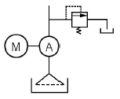
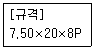
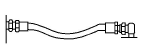
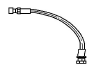
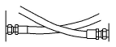
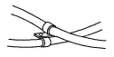
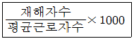

건설기계정비기능사 (2009-01-18 기출문제)
1과목: 건설기계정비(임의구분)
1. 크랭크축과 저널 베어링 틈새 측정에 쓰이는 게이지 중 가장 적합한 것은?
- 필러 게이지(FEELER GAUGE)
- 다이얼 게이지(DIAL GAUGE)
- 플라스틱 게이지(PLASTIC GAUGE)
- 텔레스코핑 게이지(TELESCOPING GAUGE)
(정답률: 61%)

2. 교류 발전기에서 유도 전류가 발생하는 것은?
- 전기자
- 스테이터
- 계자
- 로터
(정답률: 52%)
3. 표준 안지름 90mm의 실린더에서 0.26mm가 마멸되었을 때 보링 치수는 얼마인가?
- 안지름을 90.30mm로 한다.
- 안지름을 90.40mm로 한다.
- 안지름을 90.50mm로 한다.
- 안지름을 90.60mm로 한다.
(정답률: 65%)
4. 자동차 2등식 전조등에서 좌측과 우측은 어떤 회로로 연결되어 있는가?
- 병렬회로
- 직렬회로
- 직ㆍ병렬회로
- 단식회로
(정답률: 79%)
5. 실린더 총체적(V)이 1000cc 이고 행정체적이 850cc인 엔진의 압축비는?
- 5.60:1
- 6.67:1
- 5.67:1
- 7.52:1
(정답률: 71%)
6. 디젤기관 운전 중 검은 연기가 심할 때 원인으로 틀린 것은?
- 공기청정기가 막혀 있을 때
- 분사시기가 어긋나 있을 때
- 분사압력이 과다하게 낮을 때
- 연료 중에 공기가 흡입되어 있을 때
(정답률: 58%)
7. 냉각수 온도 센서를 점검하는 방법으로 바른 것은?
- 압력을 저하시킨 후 통전시험을 해 본다.
- 압력을 가하면서 통전 테스트를 해 본다.
- 출력부분과 접지부분의 전압을 측정해 본다.
- 온도에 따른 저항값을 측정하여 비교해 본다.
(정답률: 73%)
8. 축전지를 충전할 때 충전 정도를 알기 위하여 사용하는 가장 좋은 방법은?
- 전압 측정
- 전해액 비중측정
- 전류측정
- 충전 시간측정
(정답률: 69%)
9. 기관 팬 벨트의 점검 사항이 아닌 것은?
- 장력
- 손상
- 균열
- 누설
(정답률: 88%)
10. 독립식 분사펌프가 부착된 건설기계 디젤기관에서 공기빼기 작업을 하고자 할 때 바르지 못한 방법은?
- 공급밸브 입구 파이프 피팅을 조금 열고 플라이밍 펌프를 작동시켜 기포가 나오지 않을 때까지 작업을 한 후 피팅을 조인다.
- 연료필터 입구 파이프 피팅을 조금 풀고 플라이밍 펌프를 작동시켜 기포가 나오지 않을 때까지 작업을 한 후 피팅을 조인다.
- 연료필터 출구 파이프 피팅을 조금 풀고 플라이밍 펌프를 작동시켜 기포가 나오지 않을 때까지 작업을 한 후 피팅을 조인다.
- 분사펌프 입구 파이프 피팅을 조금 풀고 플라이밍 펌프를 작동시켜 기포가 나오지 않을 때까지 작업을 한 후 피팅을 조인다.
(정답률: 50%)
11. 터보차저 터빈 축의 축방향 유격은 무엇으로 측정하는가?
- 외경 마이크로미터
- 내경 마이크포미터
- 다이얼 게이지
- 직각자
(정답률: 58%)
12. 피스톤 간격이 클 경우 생기는 현상으로 틀린 것은?
- 압축압력 상승
- 블로바이가스 발생
- 피스톤 슬랩 발생
- 엔진 출력 저하
(정답률: 79%)
13. 밸브 구조에 대한 설명으로 틀린 것은?
- 밸브 헤드부 열은 밸브 스템을 통해 가장 많이 방출한다.
- 일반적으로 밸브 헤드부는 배기밸브가 흡입밸브보다 작다.
- 디젤기관 흡입 및 배기밸브 마친 두께가 규정값 이하가 되면 교환한다.
- 밸브 면은 밸브시트에 접촉되어 기밀유지 및 밸브 헤드의 열을 시트에 전달한다.
(정답률: 42%)
14. 분사펌프 연료 차단 솔레노이드 밸브 단품 점검 방법으로 적합한 것은?
- 작동음과 저항값 점검
- 진동음과 절연값 점검
- 저항값과 절연값 점검
- 작동음과 듀티율 점검
(정답률: 59%)
15. 예열장치 점검 사항이 아닌 것은?
- 예열 플러그 단선 점검
- 예열 플러그 양부 점검
- 접지 전극 점검
- 예열 플러그 파일럿 및 예열 플러그 저항값 점검
(정답률: 72%)
16. 냉난방 장치에서 사용되고 있는 수동식 송풍기 모터 회전수 제어는 주로 무엇을 이용하는가?
- 저항
- 센서
- 반도체
- 릴레이
(정답률: 46%)
17. 탄산가스 용접기의 토치 부품에 해당하지 않는 것은?
- 노즐
- 인슐레이터
- 팁
- 유량계
(정답률: 69%)
18. 측정기(마이크로미터)의 보관방법 설명으로 옳지 않은 것은?
- 직사광선 및 진동이 없는 장소에 보관한다.
- 방청유를 바르고 나무상자에 보관한다.
- 스톱 레칫을 회전시켜 적당한 압력으로 앤빌과 스핀들 측정면을 밀착시켜 둔다.
- 습기나 먼지가 없는 장소에 둔다.
(정답률: 72%)
19. 부품이나 재료 등을 잡은 상태로 고정할 수 있는 구조의 공구는?
- 콤비네이션 플라이어
- 롱노즈 플라이어
- 스냅링 플라이어
- 바이스 플라이어
(정답률: 75%)
20. 피복 아크 용접시 용접봉과 용접선이 이루는 각도를 무엇이라 하는가?
- 작업 각도
- 용접 각도
- 진행 각도
- 자세 각도
(정답률: 61%)
2과목: 일반기계공학(임의구분)
21. 고무 스프링에 대한 설명으로 맞지 않는 것은?
- 인장력에 강하므로 인장하중을 피하는 것이 좋다.
- 감쇠작용이 커서 진동 및 충격흡수가 좋다.
- 방진효과뿐만 아니라 방음효과도 우수하다.
- 노화와 변질방지를 위하여 0~70℃ 온도 범위에서 사용하여야 하며, 기름과의 접촉와 직사광선을 피하도록 한다.
(정답률: 65%)
22. 주조할 때 금형의 다이에 접속된 표면을 급랭시켜서 표면은 Fe3C(시멘타이트)가 되게 하고 금속의 내부는 서냉시켜서 펄라이트가 되게 한 주철은?
- 구상 흑연 주철
- 칠드 주철
- 가단 부철
- 미하나이트 주철
(정답률: 46%)
23. 다음 중 상온에서 충격값을 저하시키는 상온 매짐(냉간취성)의 원인은?
- 망간
- 규소
- 황
- 인
(정답률: 44%)
24. 큰 동력을 전달할 수 있고 축 방향으로 보스를 이동시킬 수 있는 키는?
- 스플라인(spline)
- 세레이션(serration)
- 원추 키(cone key)
- 묻힘 키(sunk key)
(정답률: 60%)
25. 경금속과 중금속의 구분은 비중 값 얼마를 기준으로 하는가?
- 3.5
- 4
- 4.5
- 5.0
(정답률: 45%)
26. 제철을 할 때 용광로 속에 주입되지 않는 것은?
- 철광석
- 석회석
- 코크스
- 석탄가스
(정답률: 68%)
27. 유체 클러치 오일이 갖추어야 할 조건 중 틀린 것은?
- 비점이 높을 것
- 착화점이 높을 것
- 점도가 높을 것
- 비중이 클 것
(정답률: 56%)
28. 동력 조항장치가 고장 났을 때 수동조작을 가능하게 하는 밸브는?
- 안전체크 밸브
- 흐름제어 밸브
- 압력조절 밸브
- 밸브스풀
(정답률: 55%)
29. 트랙의 주요 구성품으로 맞는 것은?
- 핀, 부시, 롤러, 링크
- 슈, 링크, 부싱, 동판
- 핀, 부시, 링크, 슈
- 슈, 링크, 동판, 롤러
(정답률: 63%)
30. 구동축 기어의 잇수 Z1=10, 종동축 기어의 잇수 Z2=25, 구동축 회전수 N1=100rpm일 때 종동축의 회전수 N2는?
- 60rpm
- 40rpm
- 120rpm
- 180rpm
(정답률: 55%)
31. 유압식 굴삭기의 작업장치, 주행, 선회 등에서 힘이 약할 때의 고장 원인 중 틀린 것은?
- 작동유량이 부족하거나 흡입필터가 막혀 있다.
- 릴리프 밸브(레귤레이터 밸브)의 설정압이 낮다.
- 구션 밸브(스윙 브레이크 밸브) 스프링이 절손되었다.
- 유압펌프 기능이 저하되거나 공기가 혼입되었다.
(정답률: 50%)
32. 타이어식 건설기계 제동장치에서 디스크 브레이크의 특징 중 틀린 것은?
- 디스크가 노출되어 회전하기 때문에 방열이 잘 되며, 열 변형에 의한 제동력 저하가 없다.
- 자기배력작용이 거의 없어 고속에서 사용해도 제동력의 변화가 적다.
- 디스크와 패드의 마찰면적이 크기 떄문에 패드의 누르는 힘을 적게 해도 된다.
- 자기배력작용이 거의 없기 때문에 조작력이 커야 한다.
(정답률: 59%)
33. 지게차 마스트 경사각을 조정할 때 마스트를 어느 상태로 하면 가장 효과적으로 조정할 수 있는가?
- 수평상태
- 앞으로 기울인 상태
- 뒤로 기울인 상태
- 수직상태
(정답률: 56%)
34. 불도저의 화이널 드라이브 기어장치 구성부품이라고 볼 수 없는 것은?
- 더블 헬리컬 기어
- 아이들 피니언 기어
- 메인 드라이브 기어
- 피니언 기어
(정답률: 62%)
35. 유압 펌프 중 가장 고압용은?
- 기어 펌프
- 베인 펌프
- 나사 펌프
- 피스톤 펌프
(정답률: 83%)
36. 유압식 굴삭기에서 주행 및 선회시 힘이 약하다. 그 원인으로 적합한 것은?
- 흡입 스트레이너가 막혔다.
- 릴리프 밸브의 설정압이 높다.
- 작동유의 온도가 높다.
- 축압기가 파손되었다.
(정답률: 68%)
37. 유압회로의 일부를 표시한 것이다. A에는 무엇이 연결되어야 하겠는가?

- 유압 실린더
- 오일 여과기
- 유압 펌프
- 방향제어 밸브
(정답률: 62%)
38. 건설기계에서 유압을 조절하는 압력제어 밸브(Pressure Control valve)의 종류에 속하지 않는 것은?
- 릴리프 밸브
- 리듀싱 밸브
- 시퀸스 밸브
- 스풀 밸브
(정답률: 56%)
39. 유압 작동유에 요구되는 성질로 틀린 것은?
- 온도 변화에 따른 점도 변화가 작을 것.
- 강력한 유막을 형성할 수 있을 것.
- 열팽창 계수가 적을 것.
- 인화점과 발화점이 낮을 것.
(정답률: 73%)
40. 타이어의 규격을 나타낸 것이다. 표기되지 않은 것은?

- 타이어 폭
- 타이어 외경
- 타이어 내경
- 플라이 수
(정답률: 49%)
3과목: 안전관리(임의구분)
41. 도로주행 건설기계의 유압 브레이크에서 20kgf의 힘을 마스터 실린더의 피스톤에 작용했을 때 제동력을 얼마인가? (단, 마스터 실린더 피스톤 단면적 5cm2, 휠 실린더의 피스톤 단면적은 15cm2이다.)
- 20kgf
- 40kgf
- 60kgf
- 80kgf
(정답률: 51%)
42. 불도저의 평균운반거리 : 50m 이고 전진 평균속도 : 40m/min 후진 평균속도 : 100m/min 일 때 1사이클에서 변속을 요하는 기어변환 총 시간은 0.25min이다. 도저 블레이드의 사이클 시간은?
- 1min
- 2min
- 3min
- 4min
(정답률: 53%)
43. 트랙식 굴삭기에서 트랙의 장력을 조정하기 위하여 트랙 프레임 위를 전ㆍ후로 움직이는 구조로 되어 있는 것은?
- 캐리어 롤러
- 트랙 아이들러
- 리코일 스프링
- 스프로킷
(정답률: 62%)
44. 유압 호스 설치가 잘못된 것은?




(정답률: 59%)
45. 유압기기 정비작업시 주의해야 할 사항 중 옳지 않은 것은?
- 유압펌프나 모터를 개조해서 사용한다.
- 펌프, 모터 등을 밟고 올라가지 않는다.
- 유압 작동유가 바닥에 떨어지지 않게 한다.
- 유압라인 가까이에서 산소 용접이나 전기 용접을 하지 않는다.
(정답률: 88%)
46. 모터그레이더로 삭토 작업을 할 때 가장 알맞은 것은?
- 72~81도
- 61~70도
- 36~38도
- 28~32도
(정답률: 42%)
47. 다음 중 아스팔트 피니셔의 크라운율을 바르게 설명한 것은?
- 포장 가능한 횡단구배를 백분율로 나타낸 것.
- 댐퍼의 다짐압력을 다짐면적으로 나눈 값을 백분율로 나타낸 것.
- 호퍼의 용량을 작업속도로 나눈 값을 백분율로 나타낸 것
- 슈플레이트의 면적에 피니셔의 중량을 나눈 값을 백분율로 나타낸 것.
(정답률: 33%)
48. 공기압축기에서 압축소요시간이 과다하게 소요될때의 원인으로 거리가 먼 것은?
- 체크밸브의 밀착이 불량하여 역류 발생
- V벨트가 느슨하여 구동이 불량
- 유압펌프의 결함
- 압축기 각부의 마모
(정답률: 48%)
49. 아스팔트 포장 롤러(roller) 다짐 작업방법 중 틀린 것은?
- 건조한 노면은 물을 약간 뿌려서 다짐 한다.
- 같은 위치에서 정지되지 않도록 작업한다.
- 다짐작업은 조인트부터 시작한다.
- 구배노면의 경우 높은 쪽에서 낮은 쪽으로 작업한다.
(정답률: 60%)
50. 기중기의 붐 작업을 할 때 운전반경이 작아지면 기중능력은?
- 감소한다.
- 증가한다.
- 변하지 않는다.
- 수시로 변한다.
(정답률: 75%)
51. 안전ㆍ보건표지의 종류와 형태에서 그림이 나타내는 것은?
- 출입금지
- 보행금지
- 차량통행금지
- 사용금지
(정답률: 78%)
52. 산업재해 분석을 위한 다음 식은 어떤 재해율을 나타낸 것인가?

- 연천인율
- 도수율
- 강도율
- 하인리히율
(정답률: 53%)
53. 렌치 사용시 주의사항으로서 틀린 것은?
- 녹이 생긴 볼트나 너트에 오일을 스며들게 한 다음 돌린다.
- 조정 조(jaw)에 잡아당기는 힘이 가해져서는 안된다.
- 장시간 보관할때에는 방청제를 바르고 건조한 곳에 보관한다.
- 힘겨울 때는 파이프 등의 연장대를 끼워서 사용하여야 한다.
(정답률: 82%)
54. 공기압축기 운전시 점검사항으로 적합하지 않은 것은?
- 압력계, 안전밸브 등의 이상 유무
- 이상 소음 및 진동
- 이상 온도 상승
- 공기 탱크내의 청결 여부
(정답률: 70%)
55. 드릴 작업의 안전사항 중 틀린 것은?
- 장갑을 끼고 작업하엿다.
- 머리가 긴 경우 단정하게 하여 작업모를 착용하였다.
- 작업 중 쇠가루를 입으로 불어서는 안된다.
- 공작물은 단단히 고정시켜 다라 돌지 않게 한다.
(정답률: 84%)
56. 화물용 승강기 안전에 관한 내용중 틀린 것은?
- 운전책임자 외 절대 운전을 금한다.
- 사용 전 작업방법 및 비상조치 요령을 숙지하여야 한다.
- 화물용 승강기에는 2인 이내의 인원이 탑승한다.
- 승강기 문이 완전히 닫힌 후 운행한다.
(정답률: 82%)
57. 축전지를 탈거하지 않고 급속 충전할 때 발전기의 다이오드 손상을 방지하기 위해서 안전한 조치는?
- 발전기 R단자를 분리한다.
- 발전기 L단자를 분리한다.
- 축전지 양측 케이블을 분리한다.
- 점화스위치를 OFF상태에 놓는다.
(정답률: 72%)
58. 다음 중 클러치 부품을 세척유로 세척을 하고자 한다. 세척해서는 안되는 부품은?
- 클러치 커버
- 릴리스 레버
- 클러치 스프링
- 릴리스 베어링
(정답률: 67%)
59. 유체 클러치 내에서 맴돌이 흐름으로 유체의 충돌이 일어나 효율을 저하시키고 있다. 이 충돌을 방지하는 것은?
- 가이드링
- 스테이터
- 임펠러
- 펌프
(정답률: 60%)
60. 아아크 용접시 용접에서 발생되는 빛을 가리는 이유는?
- 빛이 너무 밝기 때문에 눈이 나빠질 염려가 있어서
- 빛이 너무 세기 때문에 피부가 탈 염려가 있어서
- 빛이 자주 깜박거리기 때문에 화재의 위험이 있어서
- 빛 속에 강한 자외선과 적외선이 눈의 각막을 상하게 하므로
(정답률: 73%)